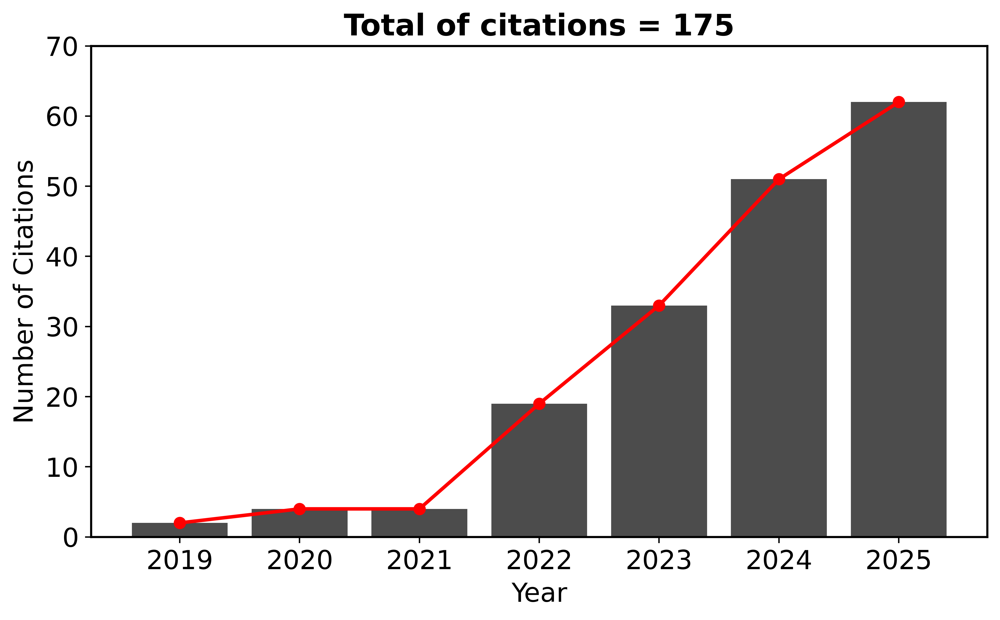

Bibliometric data
H=7, 17 articles in international peer reviewed journals, 10 articles as first author

Published articles
2025
2024
- Wimarsson et al.: Rapid formation of binary asteroid systems post rotational failure: A recipe for making atypically shaped satellites
- Madeira et al.: Long-term dust dynamics in the Didymos and Dimorphos system: Production, stability, and transport.
- Madeira & Charnoz: Revisiting Dimorphos formation: A pyramidal regime perspective and application to Dinkinesh’s satellite
2023
- Giuliatti Winter et al.: The stability around Chariklo and the confinement of its rings
- Ribeiro et al.: Dynamics around non-spherical symmetric bodies: II. The case of a prolate body
- Madeira et al.: Dynamical origin of Dimorphos from fast spinning Didymos
- Madeira et al.: Exploring the recycling model of Phobos formation: rubble-pile satellites
2022
- Madeira & Giuliatti Winter: Numerical analysis of processes for the formation of moonlets confining the arcs of Neptune
- Hyodo et al.: Challenges in Forming Phobos and Deimos Directly from a Splitting of an Ancestral Single Moon
- Madeira et al.: Dynamics around non-spherical symmetric bodies–I. The case of a spherical body with mass anomaly
- Muñoz-Gutiérrez et al.: Long-term dynamical evolution of Pallene (Saturn XXXIII) and its diffuse, dusty ring
2021
2020
- Gaslac Gallardo et al.: Analysing the region of the rings and small satellites of Neptune
- Madeira & Giuliatti Winter: Effects of immersed moonlets in the ring arc particles of Saturn
- Giuliatti Winter et al.: Neptune’s ring arcs confined by coorbital satellites: dust orbital evolution through solar radiation